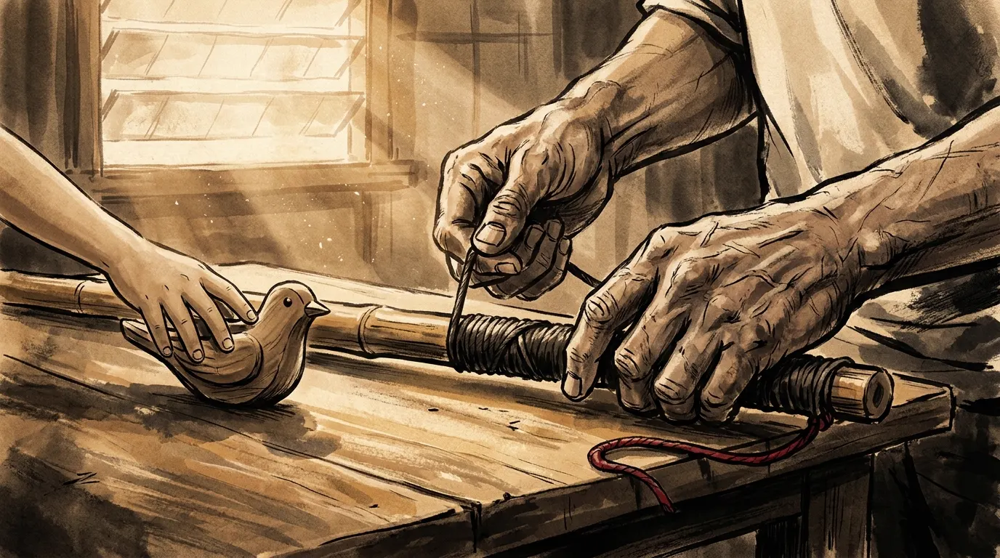
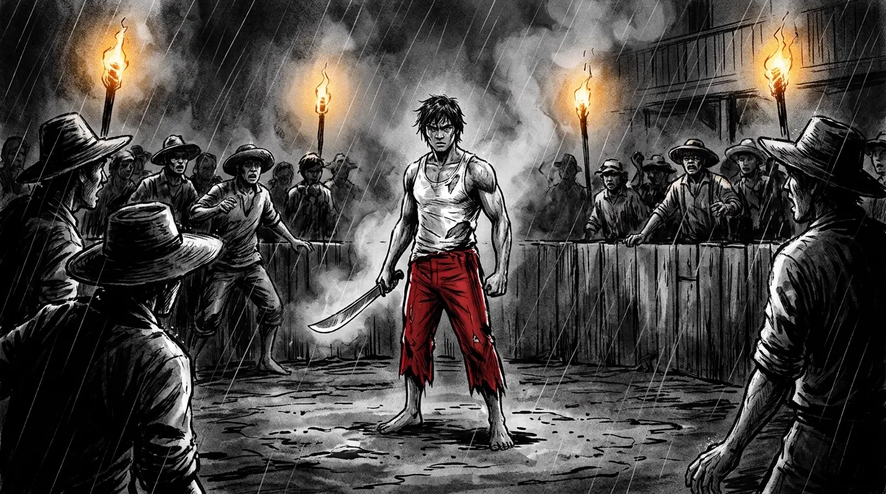
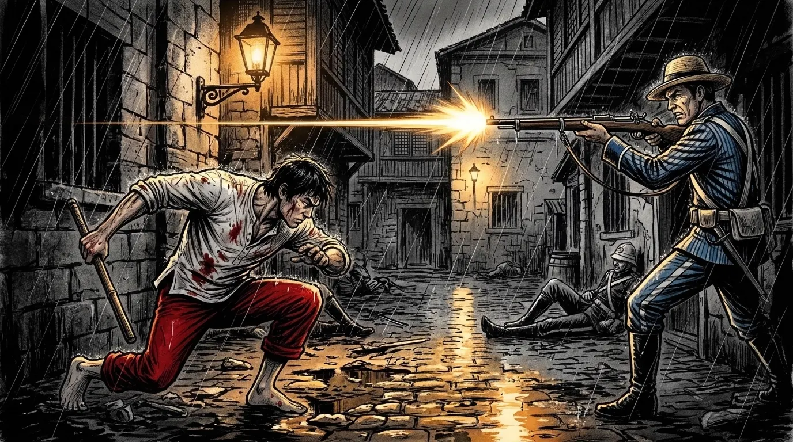
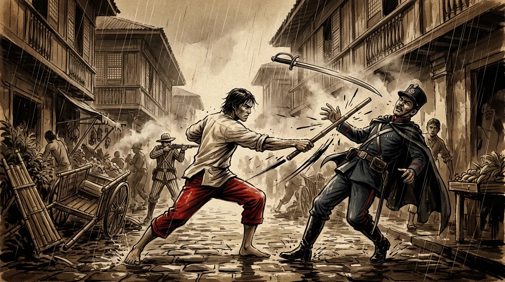

A quiet workbench
The fighter from the pits is now a rattan-cutter. He binds sticks for a living, and his daughter leaves her carved bird on the bench.

The Guardia Civil wrote “suspected insurrecto” on the report. All Vicente “Enteng” Magbanua wanted was to be left alone with his daughter and his rattan.

The fighter from the pits is now a rattan-cutter. He binds sticks for a living, and his daughter leaves her carved bird on the bench.

A Katipunero runner drops Kalayaan pamphlets in his yard. Minutes later a patrol kicks in his door and takes the one thing he swore to protect.

He takes up a seasoned rattan baston, no steel, and curses the Spanish and the rebels alike. But every street he walks wakes up a little more of Tondo.
← Swipe →
He swore off steel. They brought it to his door.
Watch the hands, not the blade. The ring closes as he raises his saber, and when it flashes white he commits. Meet him: press Q, Space, or tap the arena just before the blade lands. Five strikes, the same window as the game. Nobody gets them all on the first try.


Spanish law forbade Filipinos to carry blades, so the masters hid the blade inside the stick. Real arnis vocabulary, built into the controls. Corrections from practitioners are welcome. That's what this playtest is for.
Forehand diagonal, backhand diagonal, thrust to the middle. Fast, low damage, and the base of everything else.
L-click · X
Get close and the light strike turns into a short punch with the butt of the stick. It interrupts enemy attacks.
Light, up close
Three lights, then heavy: a continuous circular flurry that hits everyone close to you.
L ×3 → R-clickMeet the blade in the last 150 ms. A perfect sangga freezes time for a beat and opens a counter. A late one still costs you.
Q · RBA short angled sidestep, tatsulok footwork rather than a roll. Step off the line of a rifle shot or around a guard.
Space · A
Right after a perfect sangga, strip the saber from his hand. Pick it up and fight with his steel for a while.
R · RT
Katipuneros signed in secret under war names. Bonifacio's was Maypagasa, “there is hope.” Sign yours, play right away in your browser, and find out what Enteng becomes.
Now you are one, whether you meant to be or not. The street is ready when you are. Play on a computer, and keep this tab open for the feedback form after.
This build is a proof of concept. We used generative AI to make it quickly enough to put in your hands and find out whether the combat is fun. The AI-made pieces below are placeholders and starting points, not the finished game.
The game's UX is human-centred. Playtesting, fine-tuning and finalising the narrative, gameplay and illustration will be done by people, starting with your feedback.
Your sign-up and feedback go only to the instructor's Google Sheet. They are not sent to any AI tool.